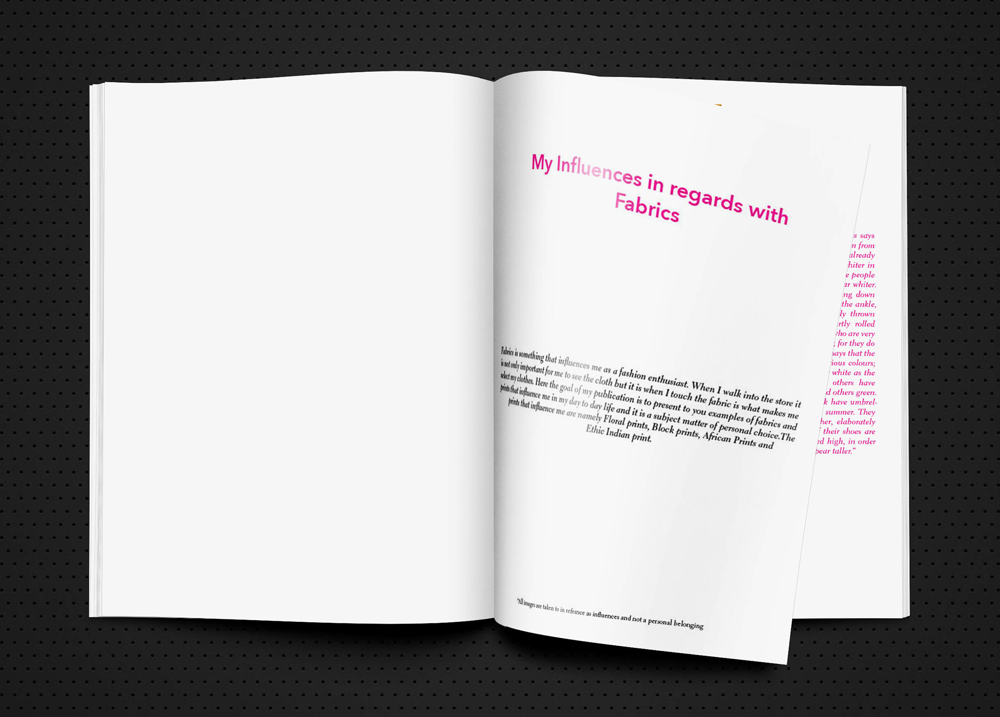
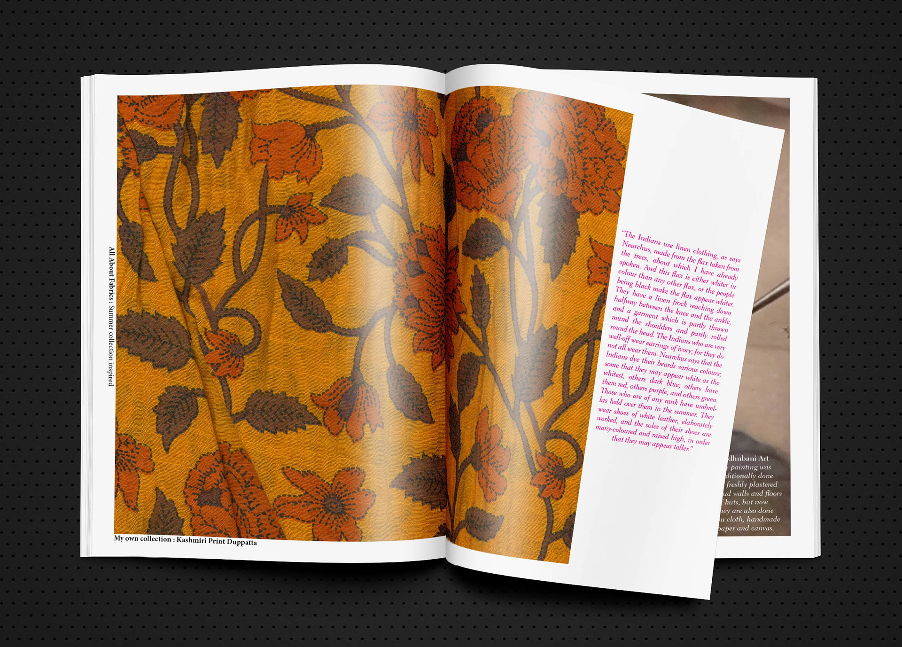
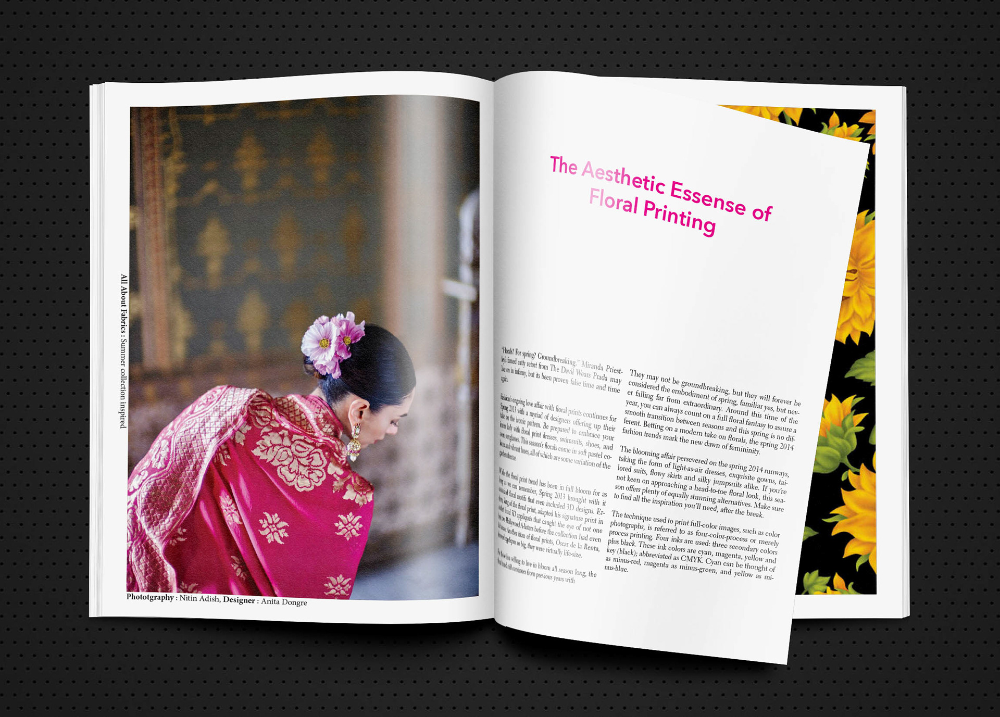
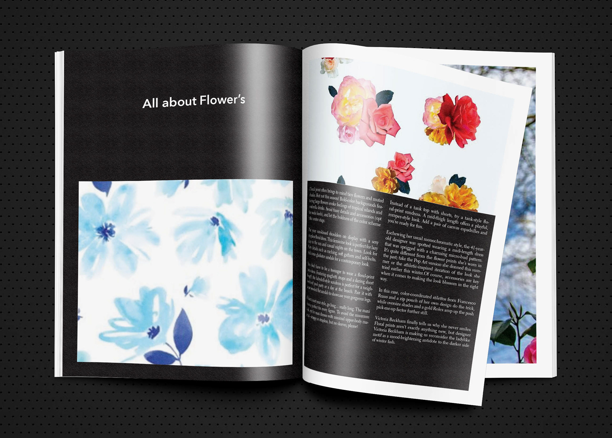
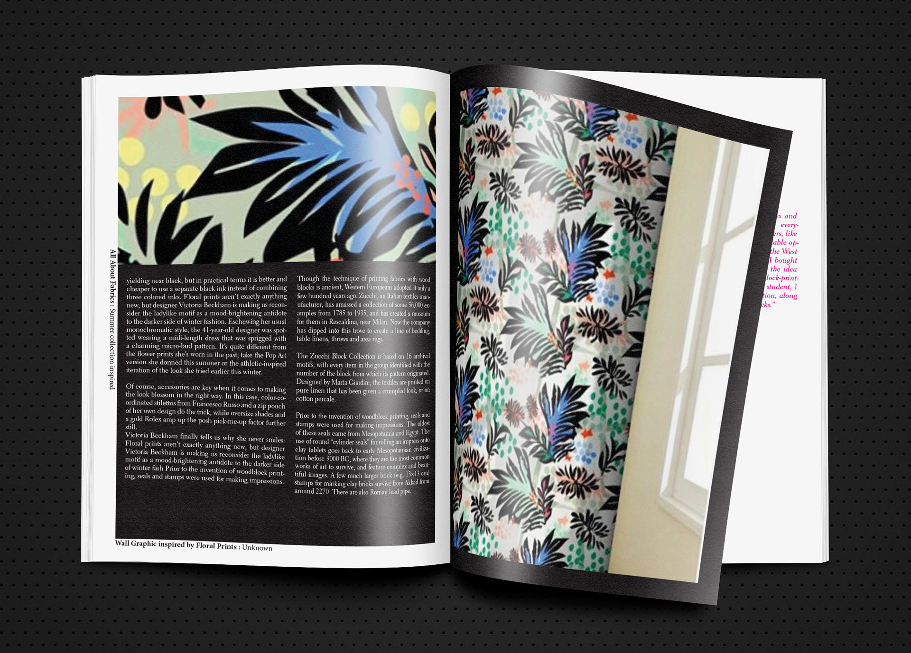

Fabrics,Publication Design
Fabrics is a Publishing Design assignment that I recently have worked on as a part of Masters program. The goal of the assignment was to first list down all your influences. Amongst the many that I listed the one that I had a strong inclination towards was my love for fabrics and different materials. Here I have elaborated four major influences that are floral prints, block prints, african tribal prints and ethnic indian print. The fonts I have used are Avenir Next and Electra LH